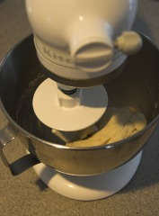
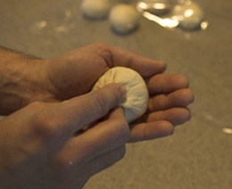
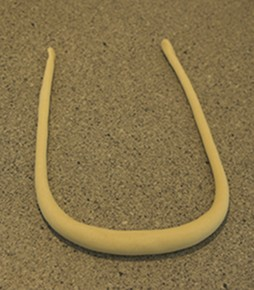
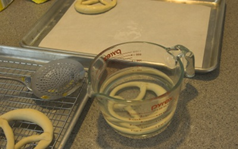
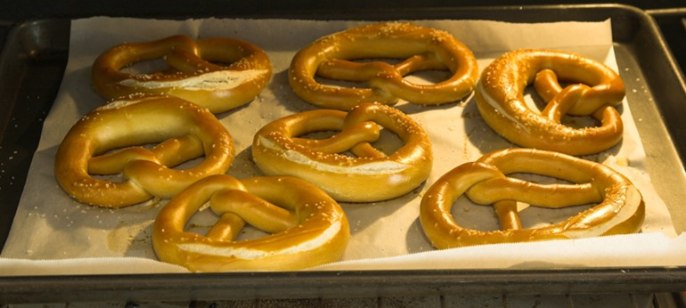

If there is any German baked good that goes well with beer, it must be the Brezel (or Brezn' as the Bavarian says). The Brezel is part of what is called Laugengebäck (lye bread) in Germany. There you will also find it in many more shapes Than just the Brezel. I'm a big fan of the Laugenbrötchen (lye roll) and here I want to share how to make them and Brezels at home.
The recipe, that is used here, comes from a PDF document written for professional German bakers which I happened to come across on the internet [Ulmer Spatz]. I'm using the Bavarian Breze recipe scaled down from the 10,000 kg version.
Here is what you need for the dough. Like many professional bread recipes it is completely weight based (except for the yeast):
ingredient
metric
US. units
bread flour
500 g
16 oz
dry malt extract(*)
20 g
0.64 oz
butter or margarine
10 g
0.32 oz
salt
11 g
0.35 oz
dry bread yeast
1 tsp
1 tsp
water
245 g
7.84 oz
(*) if you don't have dry malt extract use 10g table sugar instead
Preheat the oven to 180 C ( 350 F).

Figure 1 - Weigh the ingredients. You don't have to weigh them in separate containers as shown here. I tend to weigh them one by one while adding them to the mixing bowl
 Figure 2 - Using a powerful kitchen mixer kneed the dough for 10-15 min until smooth. You'll notice that Brezel dough is stiffer than normal bread or pizza dough. That makes the resulting bread denser and working with it much harder

Figure 3 - Once the dough has been kneaded let it rest for a few minutes before portioning. When making Brezels I don't want the dough to rise since it becomes more difficult to roll the necessary long strands if the dough has risen. To ensure evenly sized Brezels and rolls I aim for about 70-80 g (2.4 - 2.5 oz) per dough ball. You may use more or less depending on the desired size
 Figure 4 - Now form a smooth dough ball. This is done by stretching a thin membrane of dough over the ball and pinching it close at the bottom of the ball. Check out the last few minutes of Good Eat's
Flat Is Beautiful. Alton Brown does a much better job describing it than I can do here. Keep in mind that it is easier to do with a soft pizza dough than a stiff
Brezel dough.

Figure 5 - Place the ball on the counter with the top up and roll it around under your hand. This will smoothen it further. If the dough ball keeps slipping, moisten your hands with some water

Figure 6 - In the end it will look like this. Keep the completed dough balls covered to prevent them from drying out

Figure 7 - To make Brezels you need to make long strands of dough. Take a dough ball and start rolling it into a log. Moistening your hand makes rolling the fairly dry Brezel dough easier. You'll also notice that the dough doesn't like to be stretched very far. This is why you have to make the strands in steps. First roll them all to about 10 cm (4 in) in length and let them rest. Then roll them to about 25 cm (10 in) and let them rest again. Finally you should be able to roll and stretch them to about 40-60 cm (16-20 in). Resting the dough between rolling it allows the gluten proteins to relax before they can be stretched further
 Figure 8 - Finally the strands will be long enough to be formed into a Brezel. The strands should be thicker in the middle and have a slight taper towards the end. To tie the Brezel. Lay the strand in an U-shape....

Figure 9 - ... pull the left end towards the lower right and the right towards the lower left.

Figure 10 - Take the end that is now on the right and pull it over to the left where you pinch it onto the Brezel.

Figure 11 - Do the same with the end that is now on the left and done is your Brezel shape
Once the Brezels, rolls and other pieces have been formed let them rest and rise for 20-30 min. After that it is time for the lye treatment
Lye, also known as sodium hydroxide or caustic soda, is a very aggressive substance and should be handled with care. Keep it out of reach of children and pets. In addition to that wear safety glasses and gloves whenever you are using it. Please review this material safety data sheet for lye
Sodium Hydroxide / Lye MSDS for possible dangers and first aid.
Brezels and lye rolls get their characteristic taste and dark brown color from Maillard reactions during baking. While those reactions also happen during the baking process of regular bread and rolls it is greatly accelerated by the high pH that the lye treatment provides.
Food grade lye can be found for sale on the internet. Local specialty stores may carry it as well. The lye solution should have a strength of 3-4 % by weight. This means you add 30-40 g (1-1.2 oz) to 1 liter or quart of warm water. I found that 0.5 liter ( 1 pint) of lye solution to be a sufficient amount. Always add the lye to water and not the other way around. When lye is dissolved in water heat is created and adding water to lye can cause a rather sudden release of heat and possibly an eruption of concentrated lye.
A much safer alternative to lye is the use of baking soda (sodium bicarbonate). Though the Brezels and rolls won't have the same sheen compared to those prepared with lye is is an attractive for those who want to avoid using lye or try baking Brezels without having to buy lye. I have baked many batches of Brezels and "lye" rolls using a boiling baking soda solution. Simply prepare a 3-4% baking soda solution (30-40 g /1- 1.2 oz baking soda per liter or quart of water) and bring it to a boil. Submerse the formed Brezels and/or rolls in it and keep it in there for 20-30s. Then follow the rest of the instructions.
 Figure 12 - Place the risen Brezels and rolls into the lye (or boiling baking soda) solution. If you are using lye getting the Brezels covered with lye is sufficient. When using baking soda, keep the Brezel in the solution for 20-30s, Place the treated Brezels onto parchment paper, sprinkle with coarse salt and cut the dough where you want it to open up during baking.
 Figure 13 - Bake them in a 180 C ( 350 F) oven until the desired color is reached. It generally takes about 15-20 min

Figure 14 - Let them cool and enjoy. I generally make an assortment of Brezels, rolls and sticks
If you want to learn more about making bread check out these Good Eat's eposides on Youtube:
References
- [Ulmer Spatz] Backforum Bingen, Herstellung von Laugengebäcken, BIB-Ulmer Spatz'

{kind=link}
{kind=link}
{kind=link}
{kind=link}
{kind=link}